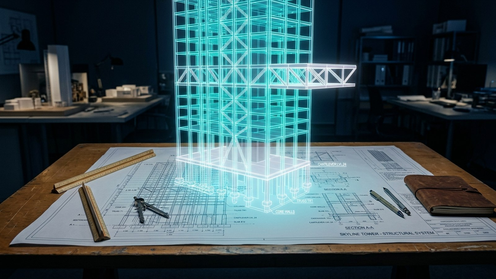

Enfoque en datos reales
Promovemos la toma de decisiones fundamentada en indicadores verificables, evitando suposiciones en la planificación y control de obra.
Somos una organización independiente especializada en capacitación y soluciones profesionales para el sector construcción. Nuestro propósito es impulsar la toma de decisiones basada en datos, la gestión eficiente de proyectos y la adopción de tecnologías que generen valor en las organizaciones.
En Construction Analytics entendemos que la industria de la construcción requiere enfoques modernos para estructurar, analizar y aprovechar los datos que se generan en cada etapa del ciclo de vida de una obra.
Nuestra labor formativa y de consultoría técnica busca cerrar la brecha entre la gestión tradicional de obras y el uso sistemático de herramientas digitales, analíticas y metodologías orientadas a la predictibilidad de costos, plazos y calidad.

Guiamos cada programa formativo y solución profesional bajo criterios de excelencia, utilidad práctica y pertinencia tecnológica.
Promovemos la toma de decisiones fundamentada en indicadores verificables, evitando suposiciones en la planificación y control de obra.
Cada concepto, métrica y metodología se enseña y aplica con rigor analítico orientado a las exigencias constructivas reales.
Integramos analítica avanzada con Power BI, estándares BIM, gestión de valor ganado y buenas prácticas contemporáneas de control.
Acompañamos el crecimiento profesional continuo de los profesionales del sector mediante contenidos estructurados y actualizados.
Nuestras iniciativas convergen en cinco ejes fundamentales que responden a los desafíos operativos y de gestión de la industria.
Formación técnica y directiva para profesionales.
Estructura de control, cronogramas y contratos.
Dashboards, modelos Power BI e indicadores.
Adopción BIM y flujos de información integrados.
Foco exclusivo en las obras y sus necesidades reales.
Contáctanos para conocer cómo podemos apoyar tus requerimientos de capacitación y analítica de obra.